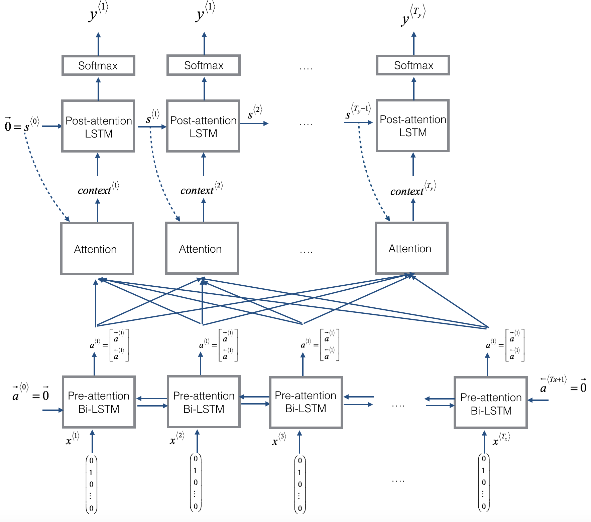

前言
将人类可读的日期格式翻译成机器可读的日期格式，这个想法真的很有意思。这篇博客记录了如何使用 attention 机制来进行机器翻译。
数据集
首先来看一下数据集，即人类和机器可读的日期格式。
1 | m = 10000 |
1 | [('9 may 1998', '1998-05-09'), |
二元组的第一个元素是人类可读的日期格式，第二个是对应的机器可读的日期格式。假设人可读日期格式的最大长度为 30，机器的为 10，数据处理如下所示：
1 | Tx = 30 |
- X.shape: (10000, 30)
- Y.shape: (10000, 10)
- Xoh.shape: (10000, 30, 37)
- Yoh.shape: (10000, 10, 11)
一共有 10000 个样本，将样本以字符级别变成独热向量。人类可读的日期格式包含 26 个字母、10 个数字和 1 个分隔符；机器可读的日期格式包含 10 个数字和 1 个分割符。
Attention 机制
Attention 机制如下图左图所示；右图为一个 attention 步，计算的 attention 变量
| Attention 机制 | Attention step |
|---|---|
|  |  |
值得注意的是左图中有两个 LSTM 网络，下面在 attention 机制之前的是一个双向的 LSTM 网络，被称为 pre-attention Bi-LSTM；上面在 attention 机制之后的是一个单向的 LSTM 网络，被称为 post-attention LSTM。pre-attention Bi-LSTM 一共有
Post-attention LSTM 会将隐藏状态
one_step_attention()：在时间步，给定 pre-attention Bi-LSTM 的隐藏状态 和 post-attention LSTM 上一个时间步的隐藏状态 。 one_step_attention()计算将会计算 attention 的权值和上下文变量：Keras 实现 one_step_attention()代码如下所示：1
2
3
4
5
6
7
8
9
10
11
12
13
14
15
16
17
18
19
20
21
22repeator = RepeatVector(Tx)
concatenator = Concatenate(axis=-1)
densor1 = Dense(10, activation = "tanh")
densor2 = Dense(1, activation = "relu")
activator = Activation(softmax, name='attention_weights') # We are using a custom softmax(axis = 1) loaded in this notebook
dotor = Dot(axes = 1)
def one_step_attention(a, s_prev):
# Use repeator to repeat s_prev to be of shape (m, Tx, n_s) so that you can concatenate it with all hidden states "a" (≈ 1 line)
s_prev = repeator(s_prev)
# Use concatenator to concatenate a and s_prev on the last axis (≈ 1 line)
concat = concatenator([a, s_prev])
# Use densor1 to propagate concat through a small fully-connected neural network to compute the "intermediate energies" variable e. (≈1 lines)
e = densor1(concat)
# Use densor2 to propagate e through a small fully-connected neural network to compute the "energies" variable energies. (≈1 lines)
energies = densor2(e)
# Use "activator" on "energies" to compute the attention weights "alphas" (≈ 1 line)
alphas = activator(energies)
# Use dotor together with "alphas" and "a" to compute the context vector to be given to the next (post-attention) LSTM-cell (≈ 1 line)
context = dotor([alphas, a])
return contextmodel()：实现整个模型。首先运行 Bi-LSTM 获取。然后运行 one_step_attention()个时间步（每个时间步共享权值参数），对于每一个时间步，首先计算上下文变量，然后运行 post-attention LSTM，其输出经过带有 softmax 激活函数的全连接层网络后生成预测 。 Keras 实现 model()代码如下所示：1
2
3
4
5
6
7
8
9
10
11
12
13
14
15
16
17
18
19
20
21
22
23
24
25
26
27
28
29
30
31
32
33
34
35
36
37
38
39
40n_a = 32
n_s = 64
post_activation_LSTM_cell = LSTM(n_s, return_state = True)
output_layer = Dense(len(machine_vocab), activation=softmax)
def model(Tx, Ty, n_a, n_s, human_vocab_size, machine_vocab_size):
# Define the inputs of your model with a shape (Tx,)
# Define s0 and c0, initial hidden state for the decoder LSTM of shape (n_s,)
X = Input(shape=(Tx, human_vocab_size))
s0 = Input(shape=(n_s,), name='s0')
c0 = Input(shape=(n_s,), name='c0')
s = s0
c = c0
# Initialize empty list of outputs
outputs = []
# Step 1: Define your pre-attention Bi-LSTM. Remember to use return_sequences=True. (≈ 1 line)
a = Bidirectional(LSTM(n_a, return_sequences=True), input_shape=(m, Tx, n_a * 2))(X)
# Step 2: Iterate for Ty steps
for t in range(Ty):
# Step 2.A: Perform one step of the attention mechanism to get back the context vector at step t (≈ 1 line)
context = one_step_attention(a, s)
# Step 2.B: Apply the post-attention LSTM cell to the "context" vector.
# Don't forget to pass: initial_state = [hidden state, cell state] (≈ 1 line)
s, _, c = post_activation_LSTM_cell(context, initial_state=[s, c])
# Step 2.C: Apply Dense layer to the hidden state output of the post-attention LSTM (≈ 1 line)
out = output_layer(s)
# Step 2.D: Append "out" to the "outputs" list (≈ 1 line)
outputs.append(out)
# Step 3: Create model instance taking three inputs and returning the list of outputs. (≈ 1 line)
model = Model(inputs=[X, s0, c0], outputs=outputs)
return model
然后可以使用
1 | model = model(Tx, Ty, n_a, n_s, len(human_vocab), len(machine_vocab)) |
优化
创建完模型后则需要需要定义损失函数、优化器和度量标准：
1 | opt = Adam(lr=0.005, beta_1=0.9, beta_2=0.999, decay=0.01) |
最后定义拟合模型的输入和输出，拟合模型：
1 | s0 = np.zeros((m, n_s)) |
可视化 Attention
可以通过输出 attention 层的输出mnt_utils.py)：
1 | attention_map = plot_attention_map(model, human_vocab, inv_machine_vocab, "Tuesday 09 Oct 1993", num = 7, n_s = 64) |
可以看到输出忽略了 "Tuesday"，在输出日期的时候，注意力明显也是放在输入的日期上，虽然图中月份部分翻译的注意力不是很明显。
总结
机器翻译模型可以将输入的序列匹配成别的序列，注意力机制则可以允许网络在输出时聚焦于与输入相关的部分。总之，这个实验更加强化了 Encoder-Decoder 模型，首先将序列编码成一个定长表示，然后再解码成其他序列。
参考文献
- 吴恩达. DeepLearning.